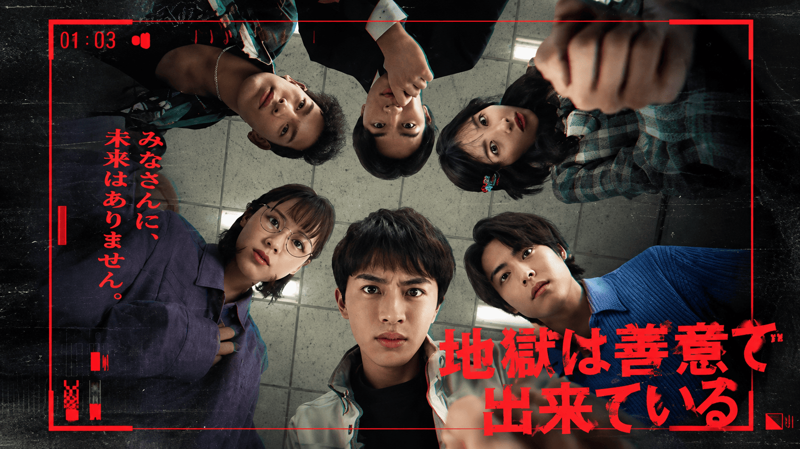

Jigoku wa Zen'i de Dekiteiru (2026)
地獄は善意で出来ている

Sebuah "Program Dukungan Khusus Mantan Narapidana" mempertemukan orang-orang yang memiliki catatan kriminal. Mereka yang berhasil lolos dijanjikan bantuan penuh untuk kembali berintegrasi ke dalam masyarakat. Para peserta yang memandang ini sebagai kesempatan untuk mengubah hidup mereka pun memulai kehidupan bersama selama satu bulan di sebuah fasilitas tertentu.
"Ayo kita bekerja sama agar bisa lulus!" Mereka mengikrarkan tekad tersebut, hari-hari mereka pun dimulai dengan penuh harapan.
Namun, apakah program rehabilitasi yang dirancang untuk membantu mereka memulai hidup baru ini benar-benar jalan menuju keselamatan atau justru awal dari neraka yang sesungguhnya?
Sebuah drama ketegangan manusiawi yang memikat, menggambarkan jebakan kejam yang terbentang di hadapan mereka serta nasib yang menanti.